Sitzung 10: Wilcoxon-Rangsummentest
Rangtests machen, anders als die bisher behandelten Verfahren, keine Verteilungsannahmen und setzen nur ein Ordinalskalenniveau der AV voraus. Die Ausprägungen der AV müssen also in eine Rangfolge zu bringen, aber die Abstände zwischen den Ausprägungen müssen nicht interpretierbar sein.
Kein t-test für Trump. Wäre ein Rangtest angemessen?
Rangtests können also in einer Reihe von Situationen nützlich sein:
- Wenn die AV auf Ordinalskalenniveau erhoben wurde
- Wenn zwar auf Intervallskalenniveau gemessen wurde, aber Verteilungsannahmen stark verletzt sind (möglicherweise verschärft durch ungleiche Gruppengrößen)
- Wenn nachträglich Zweifel daran bestehen, ob die Abstände einer vermeintlich intervallskalierten Ratingskala durch Versuchspersonen wirklich gleich wahrgenommen wurden (wenn also Zweifel daran bestehen, ob tatsächlich Intervallskalenniveau vorliegt)
Grundsätzlich gilt: Daten, die mit t-Tests analysierbar sind, sind immer auch mit einem Rangtest analysierbar (ein niedrigeres Skalenniveau als das vorliegende kann immer angenommen werden). Dass man angesichts der oben aufgelisteten Vorteile trotzdem nicht immer Rangtests verwendet, liegt daran, dass sie auch Nachteile haben: Sie nutzen weniger der in den Daten steckenden Informationen. Der Rangtest berücksichtigt nur, ob Messwerte kleiner oder größer sind als andere Messwerte. T-Tests berücksichtigen Rangfolge und Abstände. Rangtests sind dadurch weniger sensitiv als t-Tests und haben unter sonst gleichen Bedingungen eine geringere Power.

Rare footage of a rank test in its natural environment
Rangtests können also sowohl bei ordinalskalierten Daten eingesetzt werden (hier sind sie die beste verfügbare Option) als auch bei Daten mit einem höheren Skalenniveau (hier sind sie die konservativere, also vorsichtigere, voraussetzungsärmere Option, die aber mit Einbußen bei der Sensitivität einhergeht).
1 Ein Beispiel für unabhängige Daten: Wie reagieren unsere Haustiere auf den Lockdown?
In einer kürzlich durchgeführten imaginierten Studie haben Forscherinnen der Uni Göttingen 25 Hunde und 25 Katzen interviewt, deren Besitzer:innen durch den ersten Lockdown im März plötzlich ungewöhnlich viel Zeit daheim verbracht haben (Friedrich & Amiri, 2020, International Journal for Impossible But Really Cool Studies About Cats and Stuff).
Nach Ende des Lockdowns haben die Tiere folgende Frage beantwortet:
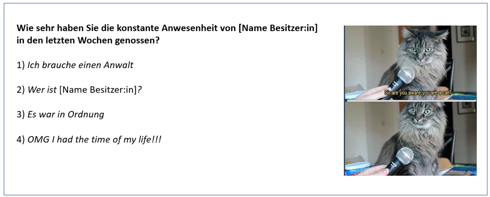
Wir haben es also mit einer Skala zu tun, bei der höhere Ratings eine höhere Ausprägung auf der interessierenden zugrundeliegenden Variable anzeigen (höhere Werte -> Zeit wurde stärker genossen). Allerdings sind die Abstände nicht interpretierbar: Zwischen 1) und 2) könnte sich zum Beispiel eine deutlich größere Zunahme der Wertschätzung befinden als zwischen 3) und 4).
Die Forscherinnen hatten die Hypothese, dass Hunde die zusätzliche Zeit mit ihren Menschen mehr genießen als Katzen, und somit tendenziell höhere Ratings auf der Skala abgeben.
Die Daten finden Sie hier.
Schauen wir uns zunächst in einem Histogramm an, wie sich die Hunde und Katzen auf die Antwortoptionen verteilen. Was sieht man?
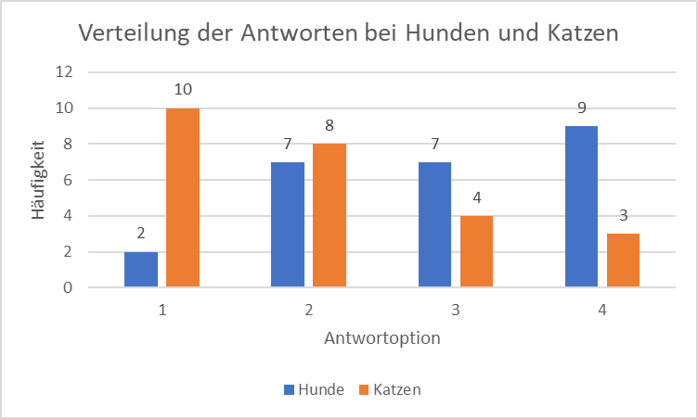
Wir sehen, dass Katzen tendenziell niedrige Ratings abgeben und Hunde tendenziell hohe Ratings. Wir möchten nun (wie immer) formal prüfen, ob diese Tendenzen ausgeprägt genug sind, um davon ausgehen können, dass sie nicht durch reinen Zufall (Stichprobenfehler) zustande gekommen sind. Wie können wir das tun, gegeben dass wir erstens keine Mittelwerte pro Gruppe berechnen können, und zweitens nur die Information berücksichtigen dürfen, ob ein bestimmter Messwert größer oder kleiner als ein anderer ist?
Wir tun etwas, das zunächst kontraintuitiv erscheint: wir werfen die Messwerte beider Gruppen in einen Topf (merken uns dabei aber natürlich, welcher Wert ursprünglich aus welcher Gruppe kam).
Diese Reihe von nun 50 Messwerten sortieren wir aufsteigend vom kleinsten Wert (eins der Einser-Ratings) zum größten Wert (eins der Vierer-Ratings). Wenn wir gekennzeichnet haben, welcher Wert ursprünglich aus welcher Gruppe stammt, können wir nun vielleicht schon ein Muster erkennen:
Ein Ausschnitt aus der Tabelle: Die niedrigen Werte stammen offenbar tendenziell von Katzen
Nach dem aufsteigenden Sortieren können wir also feststellen, welches der kleinste und welches der größte Messwert in einem Datensatz ist. Wenn wir die Messwerte nun von 1 bis 50 durchnummerieren, können wir für jeden Messwert sagen, wo er sich relativ zu den anderen Messwerten im Datensatz befindet (siehe Spalte C im Screenshot unten).
1.1 Rangbindungen
Allerdings ergibt sich hier ein Problem: mehrere Tiere haben ein Rating von 1 abgegeben (und dasselbe gilt für die anderen Antwortoptionen, keine davon wurde nur von einem einzigen Tier gewählt). Es scheint nicht richtig zu sein, zu sagen, dass z.B. Hund 6 den kleinsten Messwert im Datensatz geliefert hat und Katze 40 den neuntgrößten. Schließlich haben beide genau dieselbe Antwort abgegeben (“Ich brauche einen Anwalt”). Das sollte sich natürlich auch in der ihnen zugewiesenen Position im Datensatz widerspiegeln.
Eine gute Möglichkeit, mit solchen sogenannten Rangbindungen umzugehen, ist, identischen Messwerten einfach den mittleren Rang ihrer “Gruppe” zuzuweisen: In unserem Fall haben 12 Tiere ein Rating von 1 abgegeben (nicht alle 12 sind im Screenshot zu sehen). Zunächst werden diesen 12 Tieren in beliebiger Reihenfolge die Ränge 1 bis 12 zugewiesen (Spalte D). Anschließend wird die Summe der Ränge gebildet, die zu identischen Messwerten gehören: 1+2+3+4+5+6+7+8+9+10+11+12 = 78. Diese wird durch die Anzahl der identischen Messwerte geteilt: 78/12 = 6.5. Dieser mittlere Rang wird dann allen identischen Messwerten final zugewiesen.
Auf diese Weise haben identische Messwerte auch identische Ränge, und gleichzeitig bleibt die insgesamt vergebene Summe der Ränge konstant im Vergleich zu einem Datensatz mit identischem N und ohne Rangbindungen (wir werden später noch sehen, dass die Summe der Ränge bedeutsam ist).
Gerade bei größeren Datensätzen und/oder vielen Rangbindungen ist es natürlich mühsam und fehleranfällig, die Ränge manuell zu vergeben.
Die Funktion rang.mittelw() kann hier Abhilfe schaffen. Als Input benötigt sie:
einen Verweis auf den Messwert, dessen Rang ausgegeben werden soll (Screenshot: C2)
die Wertegruppe, relativ zu welcher der Rang ermittelt werden soll (C2:C51, also der gesamte Datensatz. Dieser Bereich wurde fixiert, damit die Formel auch auf alle anderen Messwerte angewendet werden kann).
eine Angabe, ob Ränge aufsteigen (1) oder absteigend (2) vergeben werden sollen.
Rangbindungen werden automatisch berücksichtigt, sodass in Spalte D im Screenshot jedes Tier, das eine 1 abgegeben hat, einen Rang von 6.5 erhalten hat.
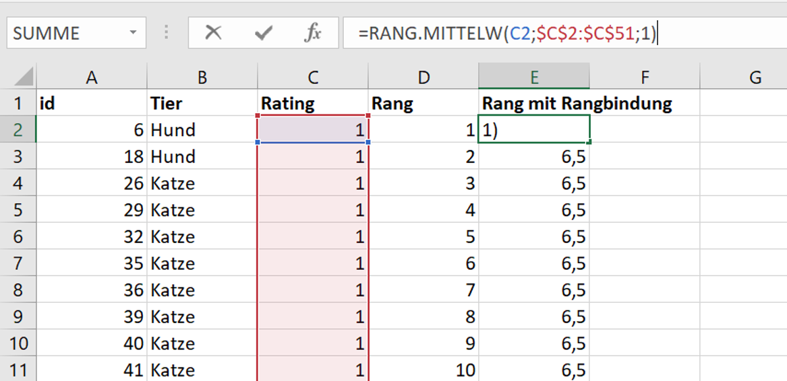
1.2 Der statistische Test
Beim statistischen Testen auf Gruppenunterschiede machen wir uns nun folgendes zunutze:
Die Gesamtsumme der vergebenen Ränge ist bei gleichem N immer gleich. Bei 50 Messwerten: 1+2+3+ (…) +50 = 1275. (Dabei ist es egal, ob zu dem niedrigsten Rang ein Messwert von 5 oder von 500 gehört, die Ränge beginnen schließlich immer bei 1 und enden bei N, z.B. 50). Durch die Art, wie wir mit Rangbindungen umgegangen sind, haben wir sichergestellt, dass das so bleibt (hätten wir stattdessen beispielsweise jedem Tier, das eine 1 als Antwort abgegeben hat, einen Rang von 1 zugewiesen, wäre das nicht mehr gewährleistet gewesen. Dann wäre die Summe der ersten 12 Messwerte ja nur noch 12 statt 78).
Wenn die H0 gilt und beide Gruppen tendenziell gleich hohe Ratings abgeben, sollte sich beim “Zusammenwerfen” der Messwerte zeigen, dass sowohl hohe als auch niedrige Messwerte ungefähr gleich häufig aus der Gruppe der Katzen und der Hunde kommen. Hohe Ränge und niedrige Ränge sollten also ca. gleich häufig in beiden Gruppen vorkommen.
Wenn wir die im Gesamtvergleich vergebenen Ränge nun zurück in ihre ursprünglichen Gruppen sortieren und für jede Gruppe eine Summe der Ränge bilden, sollten diese Summen bei Geltung der H0 ungefähr gleich sein. Die gesamte Rangsumme (hier 1275) sollte sich bei Geltung der H0 ungefähr gleichmäßig auf die beiden Gruppen verteilen (bei gleich großen Gruppen: 1275/2 = 637.5)
Je ungleicher die totale Rangsumme auf die beiden Gruppen verteilt ist, desto unwahrscheinlicher werden die erhaltenen Daten (oder noch extremere) unter Annahme der H0. Wenn sie hinreichend ungleich verteilt sind, entscheiden wir uns, die H0 zurückzuweisen und nicht davon auszugehen, dass das beobachtete Muster (Gruppenunterschied) zufällig zustandegekommen ist.
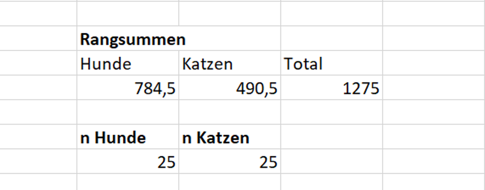
Wie erhält man aber einen p-Wert für eine Verteilung von Rangsummen auf Gruppen? Es gibt zwei Möglichkeiten:
Bei kleinem n (unter 20) sind die Wahrscheinlichkeiten für bestimmte Rangsummen tabelliert und hängen von der Stichprobengröße ab. Bei beispielsweise n1 = n2 = 5 gibt es nur 10 Messwerte. Somit gibt es eine recht überschaubare Anzahl von Möglichkeiten, wie sich die Ränge von 1 bis 10 auf die beiden Gruppen verteilen können. Die Wahrscheinlichkeit jeder dieser Aufteilungen (oder extremerer) unter Annahme der H0 wird berechnet und kann abgelesen werden (siehe Anhänge in gängigen Statistikbüchern oder online).
Ab einer hinreichend großen Stichprobengröße (über 20) kann jedoch davon ausgegangen werden, dass Rangsummen auf Populationsebene normalverteilt sind.
Würde man unseren Versuch also sehr häufig durchführen und sich jedes Mal die erhaltene Rangsumme (z.B.) für Katzen notieren, würde sich eine Normalverteilung ergeben. Das bedeutet, dass wir die Rangsumme in einen z-Wert umrechnen und gegen die Standardnormalverteilung testen können. Dazu wird die Rangsumme pro Gruppe bestimmt, die bei Geltung der H0 erwartet würde. Wenn beide Gruppen gleich groß sind, kann man die totale Rangsumme durch zwei teilen. Wenn n1 und n2 nicht identisch sind, berechnet man die erwartete Rangsumme für die Gruppe mit dem kleineren n (n_k und n_g beziehen sich auf die n’s der kleineren vs. größeren Gruppe):
\[ E_{rs} = \frac{n_k*(n_g+n_k+1)}{2} = \frac{25*(25+25+1)}{2} = 637.5 \]
Unter Annahme der H0 wäre also pro Gruppe eine Rangsumme von 637.5 am wahrscheinlichsten. Natürlich wird auch bei tatsächlicher Geltung der H0 nicht in jedem Versuch genau diese Summe getroffen werden. Eine gewisse Streuung der Rangsummen ist zu erwarten. Diese berechnet sich wie folgt, wenn man sie auf Basis einer Stichprobe schätzen möchte:
\[ \sigma_{rs} = \sqrt{\frac{n_k*n_g*(n_g+n_k+1)}{12}} = \sqrt{\frac{25*25*(25+25+1)}{12}} = 51.54 \]
Nun können wir bestimmen, wie weit die in unserem Experiment beobachtete Rangsumme von der bei H0 erwarteten Rangsumme abweicht, und zwar relativ zur geschätzten Streuung der Rangsummen (“wie viele Standardabweichungen” liegt unsere Rangsumme neben der bei H0 erwarteten Rangsumme?). Wenn die Gruppen ungleich groß sind, vergleicht man dabei natürlich die tatsächlich erhaltene Rangsumme für die Gruppe mit dem kleineren n mit der für diese Gruppe erwarteten Rangsumme. Wenn die Gruppen gleich groß sind, ist es egal, welche der Rangsummen man verwendet. Wir könnten entweder testen, ob die RS der Katzen kleiner ist als unter H0 erwartet, oder ob die RS der Hunde größer ist als unter H0 erwartet. Wir nehmen hier die Katzen (und bilden die Differenz so, dass wir einen positiven z-Wert erhalten):
\[ z_{emp} = \frac{E_{rs} -rs}{\sigma_{rs}} = \frac{637.5 - 490.5}{51.54} = 2.85 \]
Die Rangsumme der Katzen liegt hier also 2.85 Standardabweichungen unter der Rangsumme, die man bei Gültigkeit der H0 erwarten würde. Genau wie beim t-test können wir uns zu diesem empirischen z-Wert nun einen kritischen z-Wert zum Vergleich ausgeben lassen. Und natürlich können wir uns auch einen p-Wert ausgeben lassen, der uns anzeigt, wie wahrscheinlich der von uns gefundene oder ein noch extremerer Gruppenunterschied unter Annahme der H0 ist. Dabei helfen uns in Excel folgende Funktionen:
norm.s.inv(1-alpha): Welcher Wert der Standardnormalverteilung trennt die Verteilung so, dass links von der Grenze ein Anteil von 1-alpha liegt (und rechts von der Grenze somit ein Anteil von alpha)?
1-norm.s.vert(empirischer z-Wert; WAHR): Welcher Anteil der Werte der Standardnormalverteilung befindet sich rechts vom angegebenen z-Wert? (Ohne das “1-” würde links davon abgelesen.)
Für unser Beispiel ergibt sich ein kritischer z-Wert von 1.64 und ein p-Wert von 0.002. Wir können also die H1 annehmen, dass Katzen die Gesellschaft ihrer Besitzer:innen während des ersten Lockdowns weniger genossen haben als Hunde.
1.3 Effektstärke
Auch für Rangtests lässt sich eine Effektstärke (theta) bestimmen, um die Größe des gefundenen Gruppenunterschieds besser einordnen zu können.
\[ \theta = 1 + \frac{n_k * (n_k + 1)}{2 * n_k * n_g} - \frac{rs_k}{n_k * n_g} = 1 + \frac{25 * (25 + 1)}{2 * 25 * 25} - \frac{490.5}{25 * 25} = 0.74 \]
Theta kann als die Wahrscheinlichkeit interpretiert werden, dass ein beliebiger Wert in der kleineren Gruppe (oder, wenn n1 = n2, in der Gruppe, deren Rangsumme man in der Formel für theta verwendet hat) kleiner ist als ein Wert in der anderen Gruppe.
In unserem Fall liegt diese Wahrscheinlichkeit für einen beliebigen Wert der Katzengruppe also bei 74%.
Auch diesen Wert hätten wir für die Hundegruppe ermitteln können, dann hätten die die Wahrscheinlichkeit erhalten, dass ein beliebiger Wert in der Hundegruppe kleiner ist als ein beliebiger Wert in der Katzengruppe (diese Wahrscheinlichkeit sollte hier natürlich klein sein).
1.4 Fazit
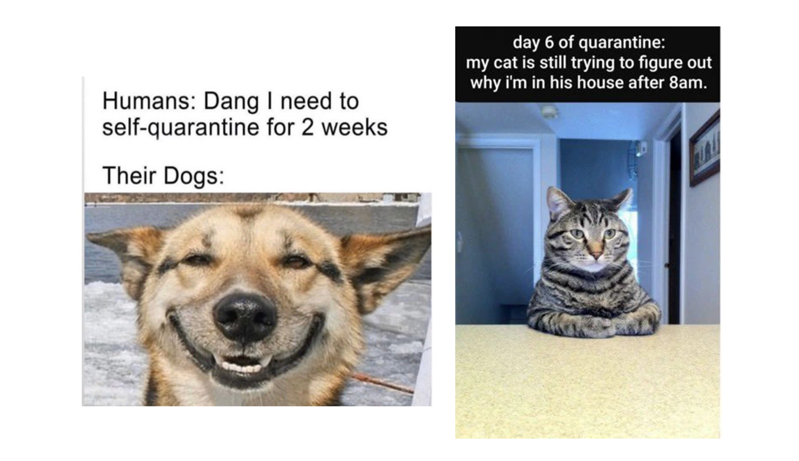
2 Ein Beispiel für abhängige Daten: Stimmung vor vs. nach Lockdown
Doe Forscherinnen haben sich ebenfalls dafür interessiert, ob (und wenn ja wie) sich das allgemeine Befinden der einzelnen Haustiere während des Lockdowns verändert (handelt es sich hier um eine gerichtete oder um eine ungerichtete Hypothese?).
Dazu haben sie alle Hunden und Katzen sowohl vor als auch nach dem Lockdown gebeten, ihr allgemeines Befinden auf folgender Skala einzuordnen:
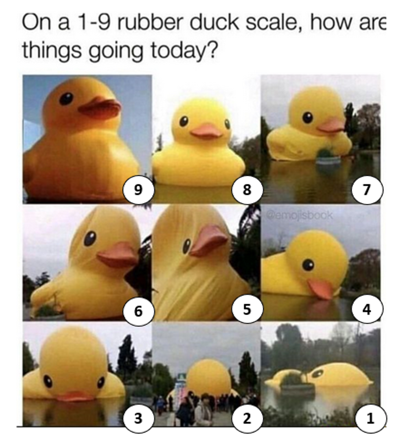
Zunächst schauen wir uns die Verteilung der Antworten vor dem Lockdown an. Das Histogramm zeigt sie einmal für alle Haustiere zusammen (blaue Balken) und einmal aufgeteilt nach Spezies (orange Balken für Hunde und graue Balken für Katzen). Die grauen und orangen Balken zeigen also an, wie sich die gesamten Antworten in jeder Kategorie auf Hunde vs. Katzen verteilen. Die grauen und orangen Balken summieren sich somit zu den blauen Balken.
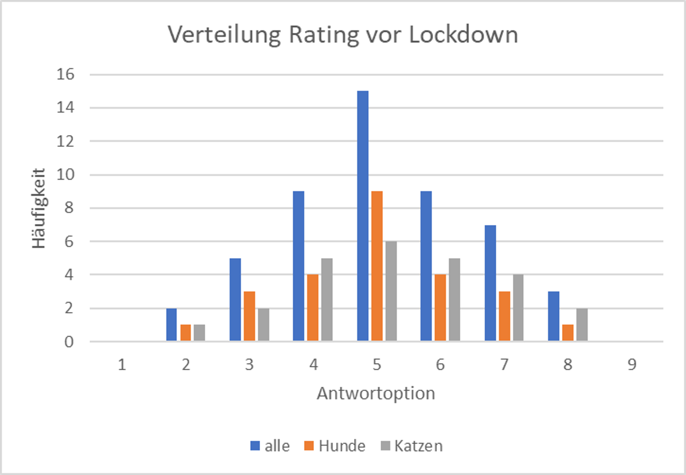
Vor dem Lockdown war das Befinden beider Gruppen offenbar recht symmetrisch um den Mittelpunkt der Skala verteilt. Schauen wir uns an, wie es nach dem Lockdown aussah:
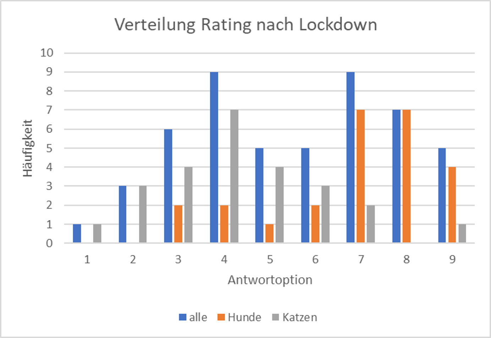
Wenn wir zunächst die blauen Balken betrachten, stellen wir fest, dass sich die Verteilung der Antworten verändert hat. Sie ist nicht mehr symmetrisch um den Mittelwert der Skala verteilt, sondern bimodal. Eine Gruppe von Tieren hatte nach dem Lockdown offenbar tendenziell ein höheres Wohlbefinden, während eine andere Gruppe tendenziell angegeben hat, sich weniger gut zu fühlen.
Wenn wir die orangen und grauen Balken betrachten, sehen wir, dass sich das Befinden der Hunde eher zum positiven verändert hat, während sich das Befinden der Katzen offenbar eher verschlechtert hat.
Wir können nun in separaten Rangtests prüfen, ob sich das Befinden der Haustiere insgesamt von Beginn zum Ende des Lockdowns signifikant verändert hat. Weiterhin gibt uns die Grafik Anlass dazu, die beiden Gruppen Hunde und Katzen zusätzlich separat zu betrachten. Wir führen also drei Rangtests für abhängige Daten durch.
Analog zum t-Test für abhängige Daten ist der erste Schritt für den Rangtest das Bilden einer Differenz der Messwerte einer Versuchsperson bzw. eines Versuchstiers. Als erstes bilden wir also für jedes Tier eine Differenz der Messwerte zwischen Beginn und Ende des Lockdowns. Dabei ist es wie immer egal, in welche Richtung wir die Differenz bilden, aber wir müssen ins im Klaren darüber sein, was eine positive vs. negative Differenz bedeuten. Wenn wir die Messwerte wie im Screenshot dargestellt voneinander abziehen, bedeutet eine positive Differenz, dass sich das Wohlbefinden nach dem Lockdown erhöht hat.
Im nächsten Schritt werfen wir alle positiven und negativen Differenzen wieder “in einen Topf”, indem wir ihre Vorzeichen ignorieren. Das entspricht dem Zusammenwerfen der Gruppen-Messwerte beim unabhängigen Test und dient dem (ordinalen) Vergleich der Beträge der Differenzen. Wir schauen also zunächst, was überhaupt die kleinsten und größten Differenzen waren, die in unserem Datensatz aufgetreten sind, unabhängig von ihrem Vorzeichen. Das Vorzeichen “merken” wir uns dabei aber natürlich, es ist ja in Spalte E kodiert.
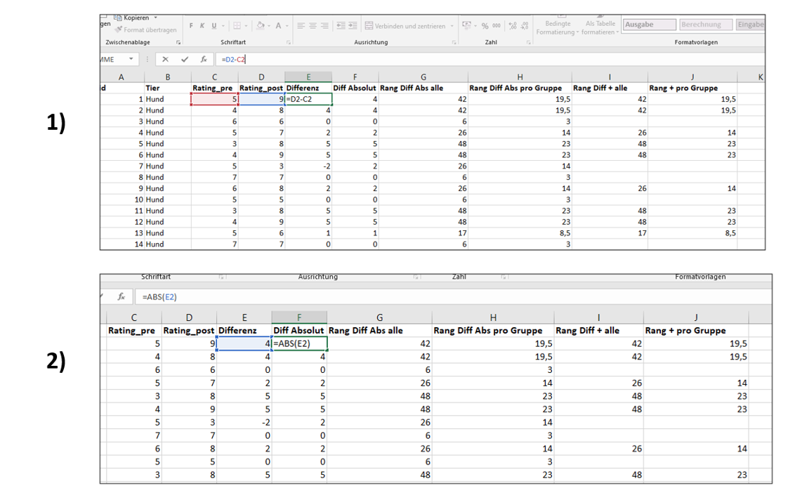
Im nächsten Schritt bringen wir die Differenzen unabhängig von ihrem Vorzeichen in eine Rangfolge. Welche Differenz war die kleinste, welche war die größte im Datensatz? Dazu können wir, wie bereits oben für unabhängige Daten beschrieben, die rang.mittelw() - Funktion nutzen (siehe Spalte G). Dadurch werden auch Rangbindungen auf die gewünschte Weise berücksichtigt. Da wir die Rangtests einmal für alle Haustiere und dann noch einmal separat für die Gruppen der Hunde und Katzen durchführen möchten, wird in Spalte H zusätzlich der Rang jeder Differenz in Bezug zu ihrer Untergruppe bestimmt (also nur in Bezug auf die Gruppe der Hunde für die Hunde, und nur in Bezug auf die Gruppe der Katzen für die Katzen). Sie sehen in der Lösung, dass sich das zweite Argument der rang.mittelw()-Funktion zwischen Spalte G und Spalte H unterscheidet (und innerhalb von Spalte H unterscheidet es sich zwischen Hunden und Katzen). Wir behandeln in Spalte H also Hunde und Katzen jeweils wie ihren eigenen Datensatz.
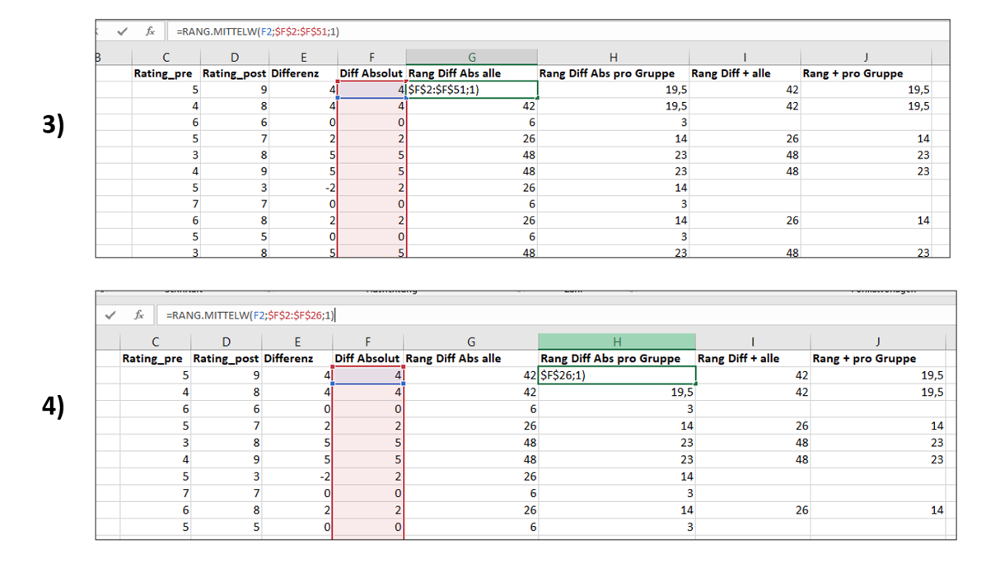
Im nächsten Schritt sortieren wir die vergebenen Ränge wieder “zurück” in ihre ursprünglichen Gruppen, indem wir uns nur diejenigen Ränge weiter anschauen, die zu positiven Differenzen gehören (natürlich könnten wir stattdessen auch nur die Ränge der negativen Differenzen betrachten, die Hauptsache ist die getrennte Betrachtung). In Spalte I versammeln wir die Ränge der positiven Differenzen, die in Bezug auf die Gesamtgruppe der Haustiere ermittelt wurden. In Spalte J sammeln wir die Ränge der positiven Differenzen, die in Bezug auf die Subgruppen der Hunde vs. Katzen ermittelt wurden.
In der Lösung werden die Spalten mit einer wenn-Funktion gefüllt: wenn eine Differenz ursprünglich positiv war (Wert größer als 0 in Spalte E), dann soll der Rang dieser Differenz (also der Wert in Spalte G bzw. H) übernommen werden. Wenn dieses Kriterium nicht erfüllt ist, soll die Zelle leer bleiben (angezeigt durch das Leerzeichen in Anführungszeichen: " ". Stattdessen könnten wir aber z.B. auch eine 0 eintragen lassen, wenn das Kriterium nicht erfüllt ist). Mit einer wenn-Funktion lassen sich solche Operationen gerade bei großen Datensätzen schneller ausführen. Natürlich könnte man die benötigten Werte aber auch manuell in die neuen Spalten kopieren.
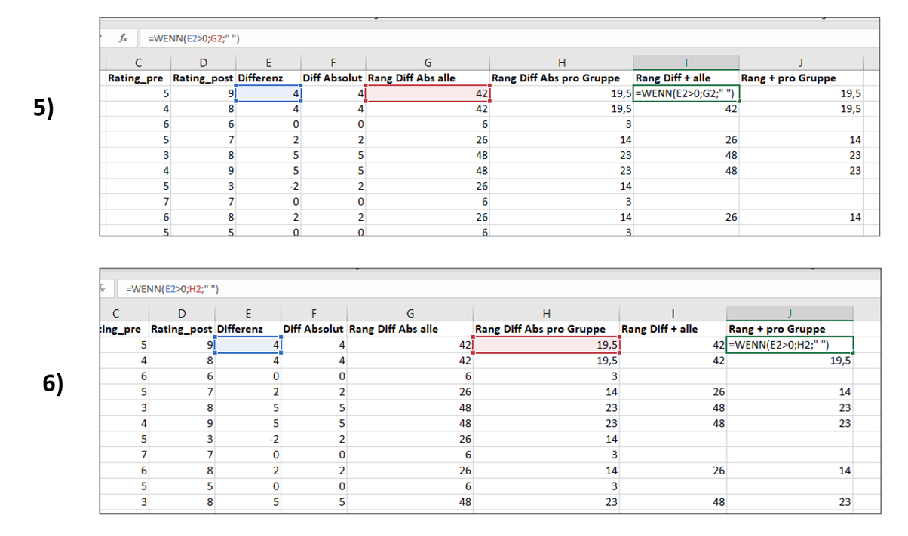
Nun können wir für alle drei Betrachtungen (Gesamtgruppe, nur Hunde, nur Katzen) die Summe der positiven Differenzen (Gesamt: Summe der Spalte I, Hunde: Summe erste Hälfte der Spalte J, Katzen: Summe zweite Hälfte der spalte J) und die Gesamtsumme der Differenzen berechnen (Gesamt: Summe der Spalte G, Hunde: Summe erste Hälfte der Spalte H, Katzen: Summe zweite Hälfte der Spalte H).
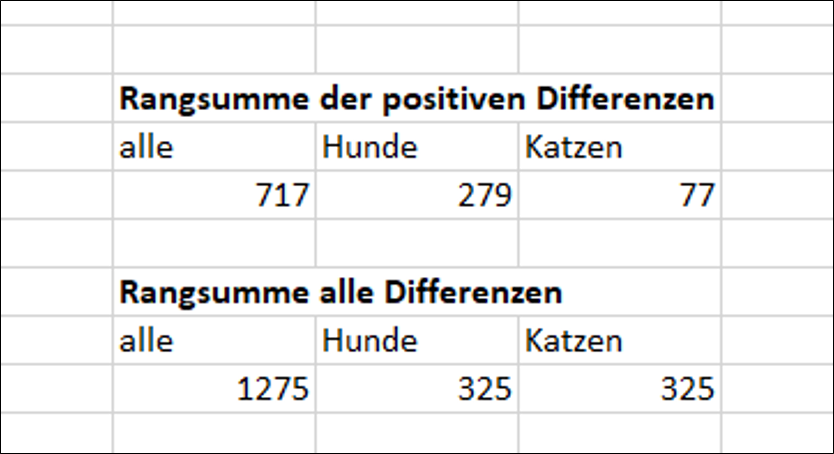
Wir sehen in der unteren Hälfte, dass die Summe aller Differenzen für die Gesamtgruppe der Tiere größer ist als für die Untergruppen, und für die Untergruppen jeweils gleich. Genau das würde man erwarten, da die gesamte Rangsumme einer Gruppe nur von der Anzahl der Werte abhängt, für die Ränge vergeben werden (in diesem Fall: Anzahl von Differenzen). Wir hatten gleich viele Hunde und Katzen im Datensatz, daher ergibt sich für beide Untergruppen dieselbe Summe.
Oben sehen wir, dass pro Gruppe unterschiedliche Anteile dieser Gesamtsummen auf positive Differenzen entfallen.
2.1 Der statistische Test
Analog zum Rangtest für unabhängige Daten stützt sich der Test für abhängige Daten auf folgende Überlegungen:
Wenn die H0 wahr ist und es keinen Unterschied im Befinden vor vs. nach dem Lockdown gibt, sollte jede beobachtete Abweichung von vorher zu nachher reiner Zufall sein. In diesem Fall sollte man gleich häufig positive wie negative Veränderungen beobachten, und sie sollten (im Betrag) auch ca. gleich hoch oder niedrig sein.
Die totale Rangsumme der Differenzen einer Gruppe sollte sich somit, wenn die H0 gilt, gleichmäßig auf positive wie negative Differenzen verteilen.
Wenn es allerdings einen systematischen Einfluss in den Daten gibt, wird man beobachten, dass eine der beiden Differenz-Gruppen (z.B. positive Differenzen) häufiger vorkommt und tendenziell (im Betrag) höher ist als die andere Gruppe. In diesem Fall wird sich die gesamte Rangsumme einer Gruppe nicht mehr gleichmäßig auf positive und negative Differenzen aufteilen.
Genau wie beim Rangtest für unabhängige Daten kann man nun:
- eine unter Annahme der H0 erwartete Rangsumme für (z.B.) positive Differenzen berechnen:
\[ E_{rs+ alle} = \frac{n*(n + 1)}{4} = \frac{50*(50 + 1)}{2} = 637.5 \]
\[ E_{rs+ Hunde/Katzen} = \frac{n*(n + 1)}{4} = \frac{25*(25+1)}{4} = 162.5 \]
- berechnen, wie sehr die unter H0 erhaltenen Rangsummen bei der vorliegenden Stichprobengröße noch um diesen erwarteten Wert streuen würden (wenn man dasselbe Experiment sehr häufig durchführen würde)
\[ \sigma_{rs+ alle} = \sqrt{\frac{n*(n+1) * (2 * n + 1)}{24}} = \sqrt{\frac{50*(50+1) * (2 * 50 + 1)}{24}} = 103.59 \]
\[ \sigma_{rs+ Hunde/Katzen} = \sqrt{\frac{n*(n+1) * (2 * n + 1)}{24}} = \sqrt{\frac{25*(25+1) * (2 * 25 + 1)}{24}} = 37.17 \]
- die Abweichung der von uns beobachteten Rangsumme der positiven Differenzen für eine Gruppe von der bei H0 erwarteten Rangsumme bestimmen und diese Abweichung an der Streuung der bei H0 erwarteten Rangsumme relativieren. Dadurch erhalten wir einen z-Wert für jede Gruppe:
\[ z_{emp, alle} = \frac{rs - E_{rs}}{\sigma_{rs}} = \frac{ 717 - 637.5}{103.59} = 0.77 \]
\[ z_{emp, Hunde} = \frac{rs - E_{rs}}{\sigma_{rs}} = \frac{ 279 - 162.5}{37.17} = 3.13 \]
\[ z_{emp, Katzen} = \frac{rs - E_{rs}}{\sigma_{rs}} = \frac{ 77 - 162.5}{37.17} = -2.3 \]
- diesen z-Wert mit dem relevanten kritischen z-Wert vergleichen und einen p-Wert bestimmen. Der kritische z-Wert bei zweiseitiger Testung (wir haben am Anfang eine ungerichtete Hypothese formuliert) ergibt sich mit norm.s.inv(0.05/2) = (+/-) 1.96. Somit liegt der empirische z-Wert für die Gesamtgruppe unterhalb des kritischen Werts. Für Hunde und Katzen separat liegt er jedoch darüber, für Hunde auf der positiven Seite und für Katzen auf der negativen Seite. Hunde haben ihr Befinden also signifikant verbessert, während sich das Befinden der Katzen im gleichen Zeitraum signifikant verschlechtert hat. Die exakten p-Werte erhalten wir für die beiden positiven z-Werte mittels 1-norm.s.vert(0.77;WAHR) = 0.22 und 1-norm.s.vert(3.13;WAHR) = 0.0009, und für die Katzen-Gruppe mit norm.s.vert(-2.3;WAHR) = 0.01. (Alternativ können wir auch für alle Gruppen den Betrag des z-Werts einsetzen: 1-norm.s.vert(abs(z-wert);WAHR)).
2.2 Effektstärke
Die Effektstärke gamma berechnet sich aus der relativen Häufigkeit positiver Differenzen (Anzahl positive Differenzen / Anzahl alle Differenzen) - 0.5. Die relativen Häufigkeiten für eine Gruppe können per Formel (zählenwenn(Werte>0)/n) ermittelt werden oder natürlich auch per Hand ausgezählt.
Für unsere drei Gruppen ergibt sich:
- Gesamt: (22/50) - 0.5 = - 0.06 (hier nur zur Demo berechnet, da die Veränderung ja nicht signifikant war)
- Hunde: (17/25) - 0.5 = 0.18
- Katzen:(5/25) - 0.5 = -0.3
Die Konventionen: klein ab 0.05, mittel ab 0.15, groß ab 0.25. (Bei den Katzen kann hier natürlich der Betrag interpretiert werden.)
2.3 Fazit
Die Ergebnisse dieser Befragung passen ins Bild, das sich bereits bei den unabhängigen Daten ergeben hat: Katzen scheinen den Lockdown grundsätzlich weniger genossen zu haben als Hunde. Bei den abhängigen Daten ist interessant, dass wir dieses Muster gar nicht gefunden hätten, wenn wir die Daten der Hunde und Katzen nicht separat im Histogramm betrachtet hätten. Insgesamt haben sich ihre Befindensveränderungen nämlich ausgemittelt, sodass es im Gesamt-Datensatz aussah, als hätte es gar keine Veränderung gegeben.
Ob die Veränderungen im Befinden der Hunde und Katzen tatsächlich durch die konstante Anwesenheit ihrer Menschen verursacht wurde, können diese Daten allerdings nicht zeigen. Schließlich könnten sich noch andere Bedingungen im Haus während des Lockdowns verändert haben. Die Ergebnisse der ersten Befragung (unabhängige Daten) deuten aber daraufhin, dass es zumindest eine plausible Hypothese ist. Weitere Forschung ist also in jedem Fall angezeigt.
Copyright © 2020 Simon Stephan. All rights reserved.